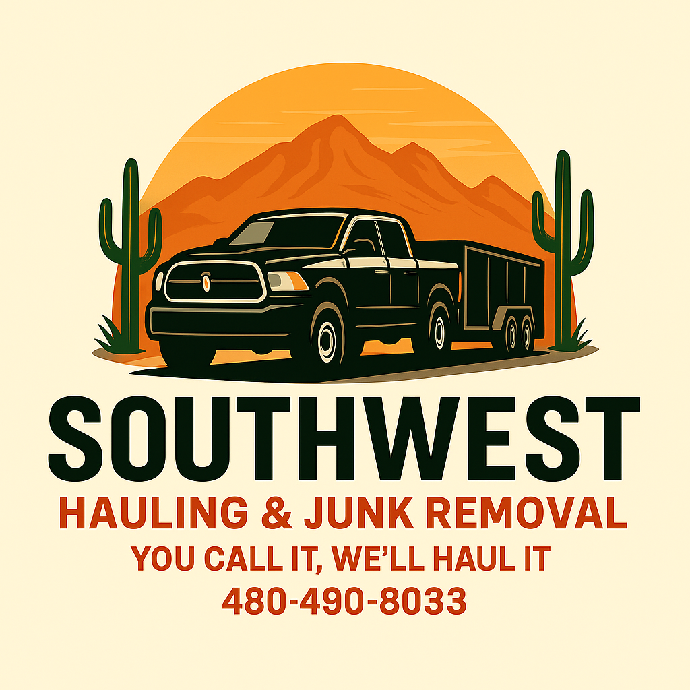
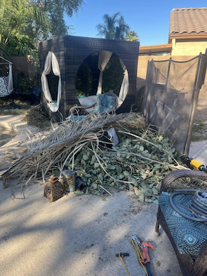
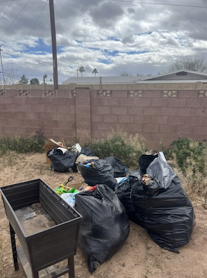
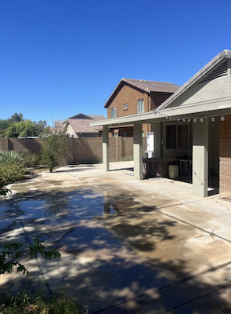
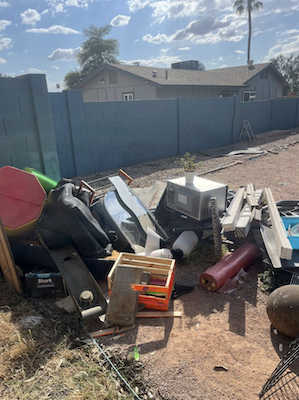
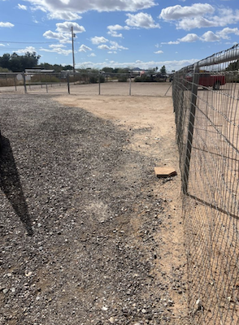
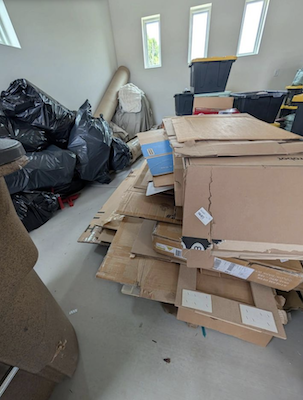
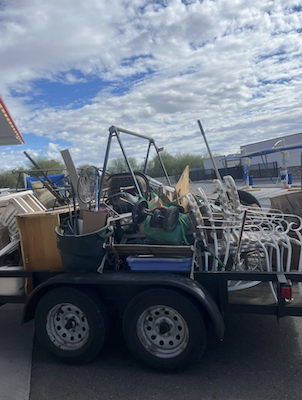

We make the mess feel cinematic before we make it disappear.
Southwest Hauling is practical work with a sharp visual edge: bold motion, legible messaging, and a service story people understand in one scroll.

East Valley of Phoenix, Arizona
You Call It, We'll Haul It
Fast, affordable hauling for homes, businesses, garages, storage units, yards, rentals, and full property cleanouts across Mesa, Gilbert, Chandler, Queen Creek, Tempe, Scottsdale, and the East Valley.
Southwest Hauling is practical work with a sharp visual edge: bold motion, legible messaging, and a service story people understand in one scroll.
The sequence scrubs through the garage expansion frame by frame, pairing movement with focused copy so the page feels built, not templated.
Texture, timing, contrast, and calls to action work together so customers remember the brand and know exactly how to book the haul.
Southwest Hauling helps homeowners and businesses across the East Valley clear clutter quickly, professionally, and responsibly through reliable hauling, junk removal, cleanouts, and property cleanup services.
Single items, bulky pickups, commercial junk removal, and full cleanouts handled by a local East Valley hauling crew.
Couches, sectionals, tables, desks, patio furniture, and bulky household items.
Washers, dryers, refrigerators, ranges, freezers, and other bulky appliances.
Clutter, boxes, old tools, shelves, storage piles, and household junk.
Branches, trimmings, outdoor debris, and cleanup loads.
Empty storage units quickly and stop paying for unused space.
Rentals, move-outs, neglected spaces, and full property cleanup jobs.
Large cleanout projects from single rooms to full properties.
Office furniture, business clutter, packing debris, and non-hazardous junk.
Real East Valley cleanups: yard debris, garage piles, side yards, fence-line junk, and full trailer loads hauled away.


Branches, outdoor clutter, and loose debris cleared from a residential patio.


Bulky items removed from a tight access area without leaving a mess behind.


Bagged waste, loose items, and neglected outdoor debris loaded and hauled off.


Mixed household junk and scrap cleared from the yard edge.


Scattered debris removed to leave the space open and usable again.


Cardboard, boxes, and bagged items removed after a move or delivery project.
From one bulky item to a full property cleanout, Southwest Hauling keeps the job simple, clear, and handled.
Get Free Quote Call 480-490-8033Local junk removal near you for homes, businesses, garages, storage units, yards, rentals, and full property cleanouts.
Call, email, or send a free quote request for affordable junk removal in the East Valley.
Quick answers for East Valley homeowners, renters, landlords, property managers, and businesses.
Junk removal pricing depends on the amount of material, item type, access, and pickup location. Send details and photos for a fast free quote.
Same day junk removal is available when scheduling allows. Call now or request a free quote with your preferred pickup date.
Yes. Southwest Hauling removes furniture, appliances, mattresses, garage junk, yard debris, storage unit items, and full cleanout loads.
Yes. We handle full property cleanouts for homes, rentals, storage units, yards, garages, estates, and commercial spaces.
We serve Mesa, Gilbert, Chandler, Queen Creek, Tempe, Scottsdale, Apache Junction, San Tan Valley, Phoenix, and the East Valley.